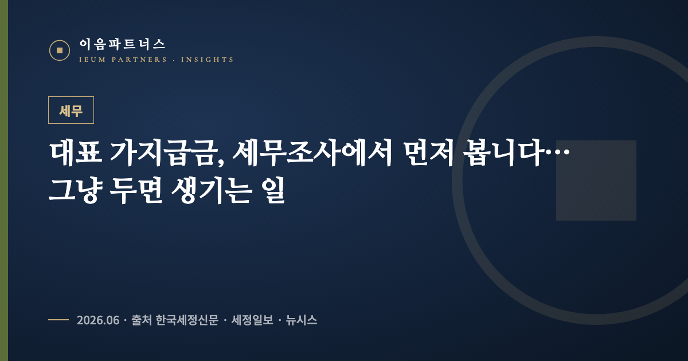

대표 가지급금, 세무조사에서 먼저 봅니다… 그냥 두면 생기는 일

회사 돈을 잠깐 쓰고 나중에 채워 넣으면 되지 않느냐는 질문을 자주 받습니다. 대표가 업무와 관계없이 회사 돈을 가져다 쓰면 장부에는 가지급금(회사가 대표에게 빌려준 것으로 처리된 돈)이 남고, 이 돈은 세무조사에서 먼저 확인하는 항목이 됩니다. 이 글에서는 가지급금을 그냥 두면 어떤 문제가 생기는지, 국세청이 실제로 무엇을 적발했는지 정리합니다.
국세청은 2026년 4월 세무조사에서 반복 과세되는 10개 유형을 공개하면서 '가지급금 등의 인정이자 계산 누락'을 포함했습니다(한국세정신문). 결산을 앞둔 지금 가지급금 잔액을 확인해 두면 내년 신고와 조사에 대비할 수 있습니다. 우리 회사 가지급금이 걱정되신다면 카카오톡 채널 이음파트너스로 편하게 물어보셔도 됩니다.
가지급금이 있으면 어떤 세금 문제가 생기나
| 구분 | 내용 |
|---|---|
| 인정이자 | 대표에게 이자를 받지 않았더라도 세법이 정한 이자율로 이자를 받은 것으로 보고 회사 수익에 더해 법인세를 계산합니다. |
| 지급이자 손금불산입 | 회사가 은행 등에서 빌린 돈이 있으면, 업무와 관계없는 가지급금에 해당하는 만큼의 이자 비용을 비용으로 인정하지 않습니다. |
| 상여 처분 | 갚을 의사나 능력이 없다고 판단되면 그 금액을 대표의 급여(상여)로 보아 대표 개인에게 소득세가 붙을 수 있습니다. |
| 가산세 | 신고를 적게 한 만큼 과소신고가산세가 붙고, 속임수가 확인되면 더 무거운 가산세가 붙을 수 있습니다. |
국세청은 법인세 신고 전 신고도움자료로 업무무관 가지급금이 인정이자와 지급이자 세무조정 대상이라는 점을 미리 안내합니다. 그런데도 연말에 대여금을 회수한 것처럼 장부를 꾸몄다가 다음 해 다시 빌려준 건설업체가 적발돼 법인세를 추징당했습니다(세정일보).
숫자만 지우면 더 큰 문제가 됩니다
가지급금을 서둘러 없애려다 오히려 문제가 커진 사례도 있습니다. 원래 회사 것이던 특허권을 대표 명의로 등록한 뒤 회사가 사들이는 것처럼 꾸며 그 대금으로 가지급금을 지운 제조업체에 대해, 국세청은 이 특허권 매매가 “대표이사 가지급금을 없애기 위한 허위 거래”였다고 확인했습니다(한국세정신문). 국세청은 특허권 감가상각비를 비용으로 인정하지 않고, 상계한 가지급금은 대표 상여로 처분했습니다.
법원 판단도 비슷합니다. 지분 100%를 가진 대표에게 무담보·무이자로 71억 원을 빌려준 회사에 대해 서울행정법원은 형식만 대여일 뿐 이익을 나눠 준 수단이라고 보고 과세가 정당하다고 판단했습니다(뉴시스).
대표님이 지금 확인할 것
- 올해 결산 기준 가지급금 잔액이 얼마이고, 어떤 지출에서 생겼는지
- 가지급금에 대한 인정이자를 계산해 신고했는지
- 대표와 회사 사이 금전 거래에 이자·상환 조건을 담은 계약서와 실제 상환 기록이 있는지
- 정리 방법을 정하기 전에 방법별 세금을 세무사와 비교해 봤는지
참고한 자료
- 국세청, 세무조사 나가면 이것부터 본다 — 한국세정신문 (2026.04.02)
- [사례] 법인세 주요 신고내용확인 추징 사례 — 세정일보 (2023.02.27)
- 국세청이 법인세 사후검증에서 주로 들여다보는 10가지 — 한국세정신문 (2025.02.27)
- 상여 117억 중 사장에 80억…法 "정상 직무대가 아냐, 법인세 내라" — 뉴시스 (2026.08.02)
가지급금을 어떤 순서로 정리하면 좋을지 궁금하시다면 카카오톡 채널 이음파트너스에서 함께 살펴보실 수 있습니다.
※ 이 글은 일반적인 정보 제공을 위한 것으로, 개별 사안은 세무사·노무사 등 전문가와 함께 확인하시기 바랍니다.